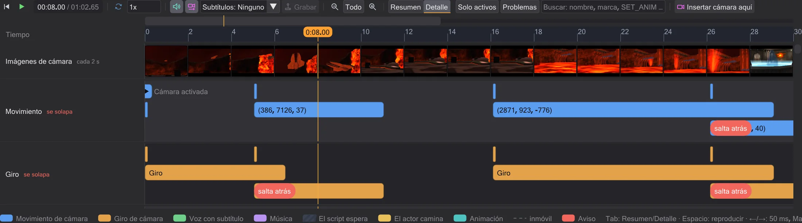
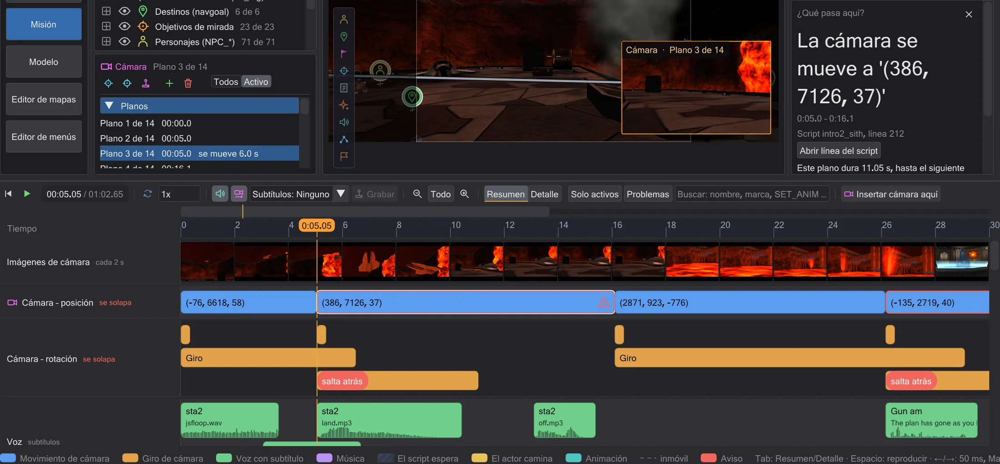
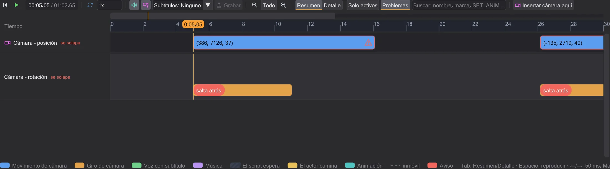
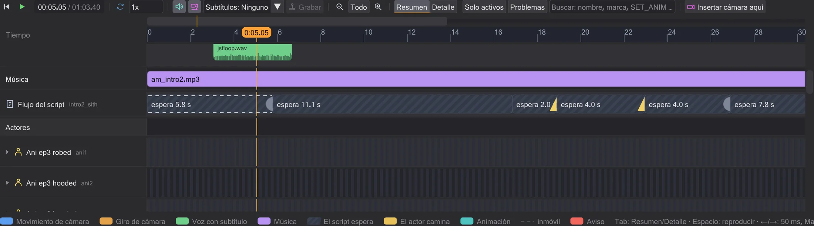
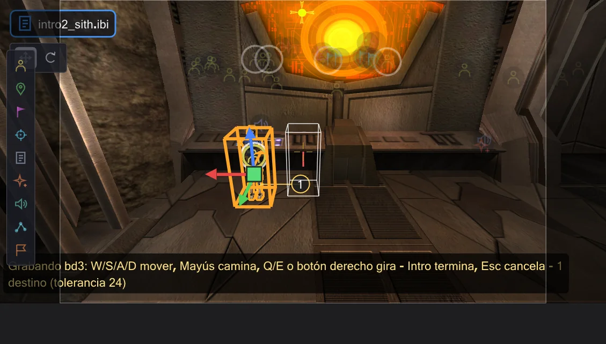
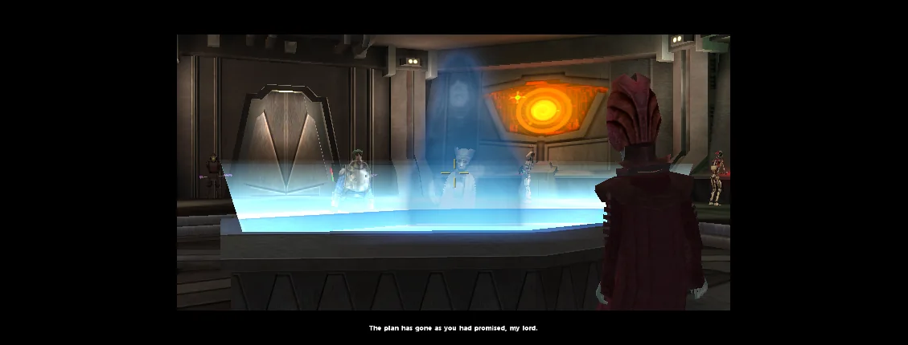

Línea de tiempo
La línea de tiempo reproduce la escena y muestra cuándo pasa cada cosa: planos de cámara con nombre, voces con subtítulos, música, las esperas del script y cada actor. Pulsa un bloque y la barra lateral lo explica; arrástralo y el script cambia.

Reproducir y moverse#
El botón de reproducir (▶) bajo el mapa inicia y detiene; con el ratón sobre la línea de tiempo, Espacio hace lo mismo. Pulsa o arrastra en la regla para fijar el tiempo: la vista 3D muestra la escena en ese momento. ← / → avanzan un fotograma del juego (50 ms, el paso de la lógica del juego), con Mayús un segundo, con Ctrl cinco segundos, Inicio salta al principio. La leyenda bajo las filas enumera estas teclas. El campo de velocidad ralentiza la escena (el sonido solo suena a 1x), Bucle la repite. Subtítulos muestra los subtítulos en la imagen de la vista previa como lo hace el juego (el ajuste del juego g_subtitles): con la cámara del script activa, en el centro de la franja negra inferior, dos líneas cada vez, cada par durante lo que sus letras ocupan del sonido; Movie Duels los dibuja más pequeños (cg_textprintscale, 0,66 por defecto). Como en el juego, Jedi Academy y Movie Duels no muestran ninguno por defecto, Jedi Outcast los muestra en las secuencias, y una figura con SET_USE_SUBTITLES siempre muestra sus frases; SET_CAPTIONTEXTCOLOR cambia el color.
Una escena empieza con un tramo de unos 30 segundos. Todo muestra toda la escena, − y + alejan y acercan, Ctrl+rueda amplía alrededor del puntero del ratón, Mayús+rueda desplaza. Solo con la vista ampliada, una barra de navegación fina sobre la regla muestra qué parte de la escena ves: pulsa o arrástrala para ir allí.
Sonido como en el juego#
La vista previa reproduce los sonidos de la escena como lo hace el juego. Oyes desde la cámara que muestra la vista; durante la reproducción, la cámara de la cinemática. Cada sonido se actualiza en cada fotograma: aleja la cámara y se apaga, corta a otro sitio y lo que hay allí se vuelve audible. Una frase que empezó fuera de alcance sigue corriendo en silencio. Como en el juego, solo las fuentes que la cámara podría ver (su PVS) hacen zumbar los sables, repetir los altavoces y sonar puertas y efectos; las voces, los sonidos de notas ROFF y los objetos que se rompen siempre se oyen. Un NPC invisible no enciende su sable de forma audible: el sonido de encendido llega cuando aparece. Los volúmenes siguen los valores predeterminados del juego (efectos 0.5, voces 1.0, música 0.25) y se pueden cambiar en Edición → Preferencias. El sonido solo suena a velocidad 1x.
sound de ROFF en una figura se queda donde empezó con las reglas de Movie Duels y se mueve con la figura con las reglas de OpenJK (Preferencias). Con las reglas de OpenJK se dispara cada nota de un fotograma ROFF (Movie Duels y Jedi Outcast solo disparan la primera), y loop sfx <sonido> da a la entidad un sonido en bucle hasta loop sfx kill; una nota USE <script> inicia ese script en la entidad, y loop rof absolute|relative reinicia el trayecto como el juego (la tarea del play nunca termina, así que un dowait sobre ella espera para siempre).Resumen y Detalle#
Resumen muestra la escena de un vistazo: Cámara – posición tiene un bloque por plano, de un movimiento de cámara al siguiente, con el nombre de su marca (o con coordenadas legibles); Cámara – rotación muestra los giros, y un giro sin duración se marca como corte. Voz muestra cada frase tan larga como su archivo de sonido, con hablante, subtítulo de los archivos de textos del juego (Jedi Academy y Movie Duels: strings/english/<mapa>.str, Jedi Outcast: strip/<mapa>.sp, con los paquetes extra que leen algunos mapas) y la forma de onda. Música muestra qué música suena y desde cuándo. Flujo del script muestra las esperas del script como bloques rayados con lo que esperan, y sus comandos como marcas con rótulo; un cambio de mapa es una marca roja. Cada actor tiene una fila: arriba las animaciones significativas con su nombre, abajo sus recorridos numerados, una línea discontinua donde está quieto, rayado donde no se ve. La flecha junto al nombre despliega su Animación y sus Comandos.

Detalle (o Tab sobre la línea de tiempo) divide la cámara en movimiento, giro, zoom y fundido, y dibuja el campo de visión y el fundido como líneas. Son rectas entre dos comandos porque el juego los interpola de forma lineal: no hay curvas de suavizado. Si un movimiento de cámara empieza antes de que termine el anterior del mismo tipo, recibe un carril propio y el aviso rojo salta atrás: el juego solo asume la posición y el ángulo al final de un movimiento (cg_camera.cpp), así que el nuevo movimiento parte de donde empezó el anterior: la cámara salta atrás.
¿Qué pasa aquí?#

Pulsa cualquier bloque o marca: el tiempo salta allí, su línea se selecciona en el script y, bajo la columna del script, el cuadro ¿Qué pasa aquí? dice con palabras sencillas lo que hace: adónde se mueve la cámara y cuánto tarda, quién dice qué frase, qué espera un wait y quién envía esa señal, qué animación se reproduce y durante cuánto tiempo. Abrir línea del script abre el comando en el editor. Un comando que viene de otro script (run, use, spawnscript) nombra ese script y su línea allí: Abrir línea del script abre ese script y selecciona la línea; uno que ha insertado la simulación no tiene línea.
Filtros y búsqueda#
Solo activos oculta los actores que no hacen nada en el tramo visible. Problemas muestra solo los puntos con avisos: movimientos de cámara que saltan atrás, comandos que la vista previa aún no simula, el cambio de mapa. El campo de búsqueda filtra por nombre, marca, archivo, subtítulo o comando (por ejemplo luke, cam1b, SET_ANIM).

Cambiar el tiempo arrastrando#
Arrastra un bloque de cámara o una frase a la izquierda o a la derecha: cambia el wait anterior, así que pasa antes o después y todo lo que viene detrás se mueve con él; con Alt, el wait siguiente se acorta lo mismo y el resto se queda donde está. Arrastra el borde derecho de un bloque de cámara para cambiar su duración, y el borde derecho de una espera para alargarla o acortarla. Una frase conserva su duración: es la del archivo de sonido. Un recorrido no se puede alargar ni acortar: su duración sale de la búsqueda de caminos y de la velocidad de la figura. Todo se ajusta a los fotogramas de 50 ms del juego y, mientras arrastras, un aviso dice qué cambia en el script.

Cada arrastre escribe el valor en el script (los comentarios y el formato se mantienen) y es exactamente un paso de Ctrl+Z: después, el script es byte a byte lo que era.
Grabar un recorrido#
Select a figure (an NPC) in the view or in its row and press Grabar in the transport bar: from the time of the playhead you steer it in the preview - W/S/A/D move, Shift walks instead of running, Q/E or the right mouse button turn. It moves with the game's movement code (Pmove), at the speeds from its .npc file and against the walls of the map. The camera follows the figure. Its model moves as in the game: the legs run, walk or step backwards as the game picks them, turn up to 60° toward the direction it moves while the upper body keeps looking ahead, blend from one animation to the next, and a weapon stance or a held animation of the upper body stays; the path is drawn, and the numbered circles are the walk targets that will be written. Listo (Enter) writes them, Cancelar (Esc) changes nothing.

Se escribe lo que usa el juego para que un NPC camine: un ref_tag por punto y un set ( SET_NAVGOAL, ... ), que en el juego espera hasta que la figura ha llegado, con SET_RUNNING/SET_WALKING delante donde cambia la forma de andar. Solo se mantienen los puntos necesarios: donde el camino se aparta de una línea recta más que la tolerancia (en unidades, ajustable durante la grabación), donde una línea recta chocaría con una pared y donde cambia la forma de andar. Los comandos van a los comandos propios de la figura en el tiempo del cabezal (un bloque affect nuevo si no tiene ninguno): un paso de Ctrl+Z. Después, la vista previa lo recorre como el juego: entre los puntos, el NPC busca su propio camino a su propia velocidad; el juego no tiene tiempos por tramo, así que la grabación solo fija los puntos y la forma de andar.

wait termina un fotograma del juego (50 ms) más tarde de lo escrito, y un dowait espera a la tarea que nombra. Un comando que la vista previa aún no simula (por ejemplo camera ( TRACK ) o print) se muestra como una marca roja en vez de adivinarlo. Se aplican las reglas de OpenJK o de Movie Duels según lo ajustado en Preferencias.